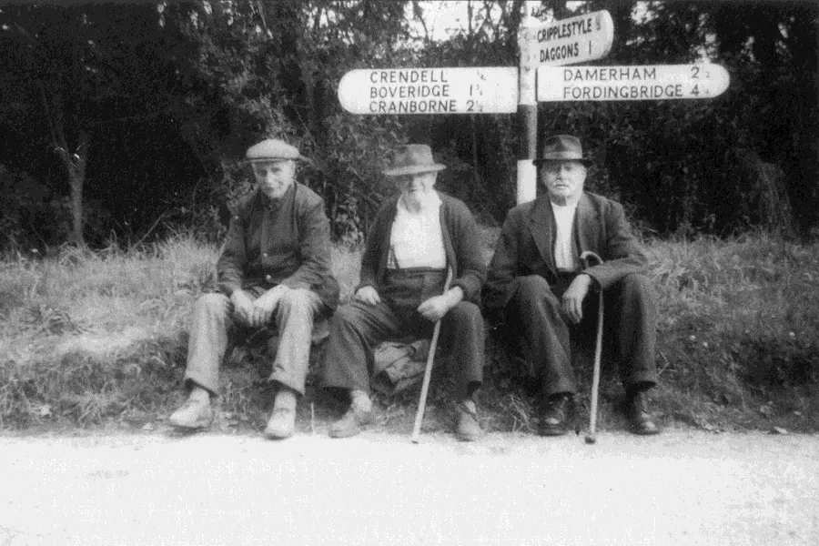
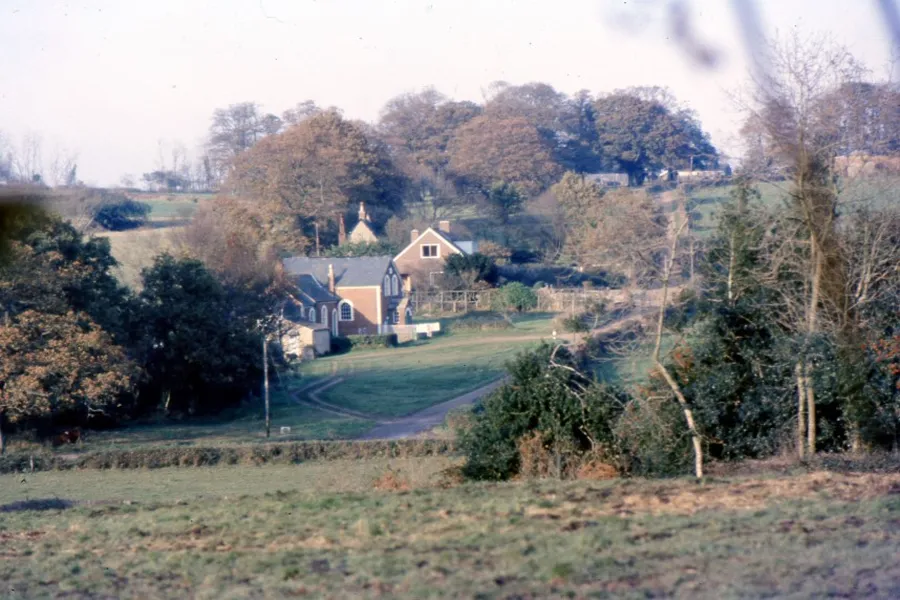
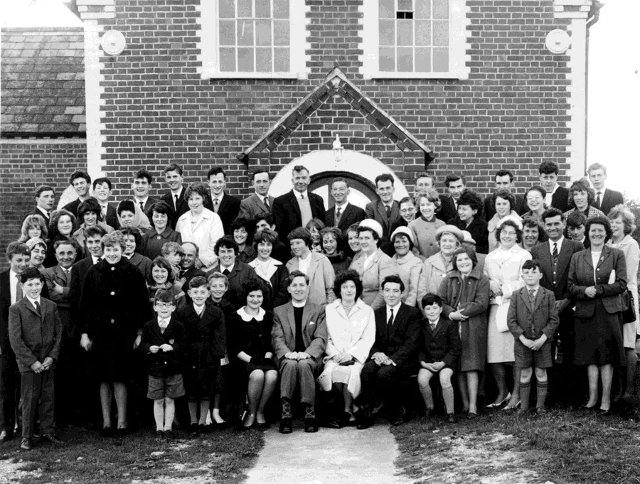
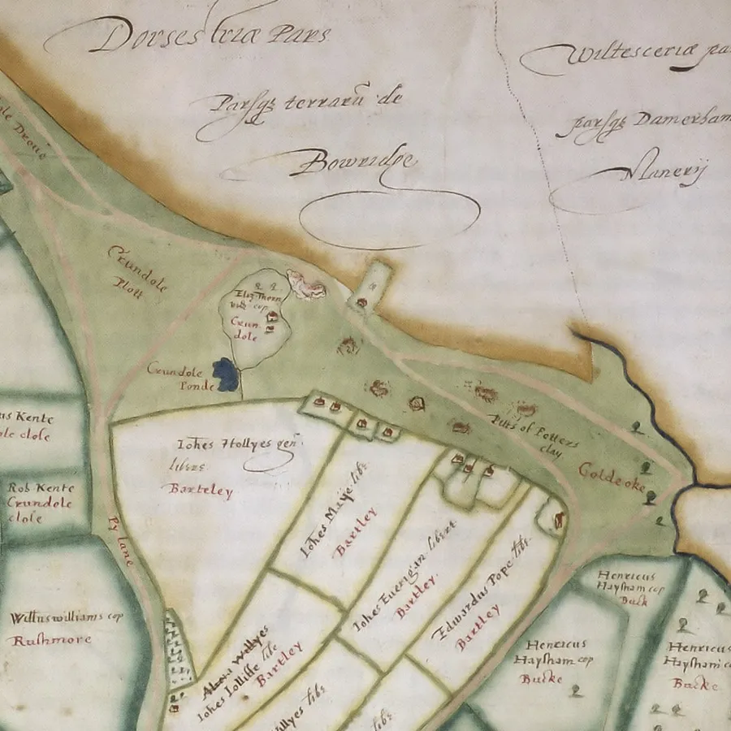
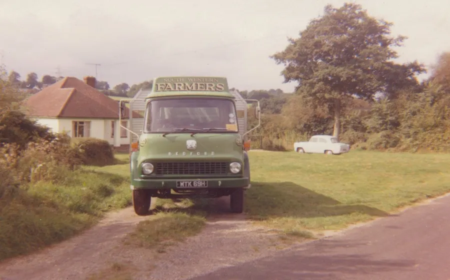

Crendell and the Methodist Church
by Adrian King

At one time, Crendell was an area of common land in the west of the parish.
Variations of the name over the years have been
- Crundole Close
- Crudole Plott
- Crundole Ponde
- Crendall
- Crendell plat
- Crendall gate
- Crundall
- Crendle Common
- Crandall Gate
- Crandall Little Cmn
There are 44 variant spellings of the name in England.
The meaning is from the Old English crundel literally crooked diggings, a pit or a quarry. Probably referring to the clay that was removed from the area for the parish potters.

By 1500 the Alderholt potters were obtaining their clay from the common at Crendell and this was to continue as the major source of clay until 1742, when the Cranborne Manor Court claimed that "The potters clay being all dug out of the said (Crendell) common the Potters are obliged to go elsewhere for a supply." But as the rents to the manor continued to be paid it can only be assumed that either another supply was found or there was more clay at Crendell.
The hamlet had developed through encroachment onto the edges of the waste and by 1611 there were eleven houses in the vicinity but there is no evidence to suggest that any of the inhabitants were directly involved with potting.

John Hutchins noted in 1772 "Crendal a small hamlet near Alderholt. Here is found good potter’s clay of which a great quantity of earthenware is made."
During the late 18th and 19th centuries new deposits of clay were found and exploited on the western side of Crendell Common in the fields still known as Clay Grounds and Old Clay Grounds. In 1841 the potteries employed one hundred men and ten boys.
Although the Methodist Chapel was situated in the county of Hampshire by just a few yards, it served the hamlet of Crendell within the Parish.

Crendell (Crindall) appeared on the Wimborne Circuit plan for the first time in 1856 and it was then known as 'Crendle'. In 1880 it was spelt as Crondall in a Sunday School Centenary article. Through the 1970s it was variously spelt Crindall and Crindell but from 1977 onwards Crendell seems to be the current definitive spelling.
It is not known to which Circuit the chapel belonged before that time. The grounds of the chapel were used as a burial place. Four headstones still stand in front of the Chapel and school. One of these headstones bears a date 1844 proving the existence of a place of worship before Wimborne Circuit records began.
The present Chapel was built in 1870 and replaced a mud Chapel on the same site. During the rebuilding the members of the society gave their services. A barn nearby which was known to be still standing in 1950 was used for worship. The Chapel covers part of the burial ground where only mounds marked the spots where the remains of those who worshipped in that primitive building were laid. The last burial took place in 1910.
For many years a Wesleyan Methodist Day School existed in the Schoolroom and was supported by fees from the parents and voluntary contributions. Mrs. Elsie Small from Fordingbridge taught there from 1890 to 1895.

The children’s desks with inkwell slots were still there as late as 1970(?) and I can remember sitting at them when I attended Sunday school there. It is thought that strict discipline was evidently exercised in the school because no mischievous scholar had marked the desks.
West Park Estates allowed the land in front of the chapel to be used as a playground. It was probably verbal and no contract was involved.
This playground which was common land was sold with Lopshill Farm to Mr. And Mrs. Clifford Thorne. When his wife died Clifford gave the land to the chapel.
Here where they worshipped oft
Now here they lay
God’s love overshadowed them
Now ‘tis the clay
Let us remember them
They lived not in vain
Descendants testify
Their life our gain.
The poem above is an epitaph that sums up the spirit of that congregation from Crendell in the 1840’s.
The congregation often united with the Congregational Church at Cripplestyle on special occasions. The church is in the Wimborne Circuit of the Southampton District.

The chapel closed in 2011. Despite the much needed rain which continued all that day on Pentecost Sunday 2011 a huge number of people drawn from the Wimborne Methodist Circuit, as well as many members from St. James Church and other churches in the area, crammed into the small chapel on the green at Crendell for its last service. People were sitting on the stairs to the gallery and in places two deep standing against the walls in the school room. This surely was the largest congregation ever crammed inside the chapel.
There was a tent erected on the green to take the overflow of worshipers but in the event the wind was so strong that the tent was in danger of blowing down. In fact had to be taken down as the service began as it was in imminent danger of blowing away.
Every available space on the green was filled with the cars of those who had braved the weather to attend this service of thanksgiving for all the Christian work that has taken place through this church, placed in this beautiful country setting.
Lord, for the years your love has kept and guided,
Urged and inspired us, cheered us on our way.
Sought us and saved us, pardoned and provided,
Lord of the years, we bring our thanks today.
Timothy Dudley-Smith
| Ministers | |
| Rev. Douglas Brown | 1953 |
| Rev. Cledwyn Wood | |
| Rev. Kenneth Aldrich | 1971 – 76 |
| Rev. A. Richard Heafield | 1976 – 77 |
| Rev. Derek R. Chapman | 1977 – 85 |
| Mr. David Mansbridge | 1985 – 93 |
| Rev. A. Richard Heafield | 1993 – 95 |
| Rev. John D. Walker | 1995 – 2001 |
| Rev. Derek R. Chapman | 2001 – |
| Rev. David Hookins | – 2011 |